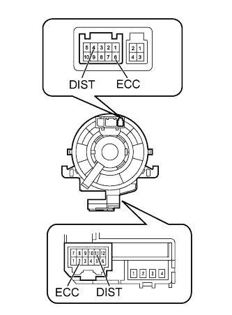

DYNAMIC RADAR CRUISE CONTROL SYSTEM > Distance Control Switch Circuit |
| 1.INSPECT STEERING PAD SWITCH ASSEMBLY (DISTANCE CONTROL SWITCH) |
Remove the steering pad switch assembly (Click here).
| *1 | Distance Control Switch | - | - |
Measure the resistance according to the value(s) in the table below.
| Tester Connection | Switch Condition | Specified Condition |
| 4 (DIST) - 6 (ECC) | Distance control switch on | Below 2.5 Ω |
| 4 (DIST) - 6 (ECC) | Distance control switch off | 1 MΩ or higher |
|
| ||||
| OK | |
| 2.INSPECT SPIRAL WITH SENSOR CABLE SUB-ASSEMBLY |
Remove the spiral with sensor cable sub-assembly (Click here).
|  |
If there are any defects as follows, replace the spiral with sensor cable sub-assembly with a new one: scratches, cracks, dents or chips in the connector or spiral with sensor cable sub-assembly.
Check the spiral with sensor cable sub-assembly.
Set the spiral with sensor cable sub-assembly to the center position (Click here).
Rotate the spiral with sensor cable sub-assembly 2.5 times clockwise and measure the resistance according to the value(s) in the table below. Then rotate the spiral with sensor cable sub-assembly 5 times counterclockwise and measure the resistance according to the value(s) in the table below.
| Tester Connection | Condition | Specified Condition |
| 4 (DIST) - 11 (DIST) | Always | Below 1 Ω |
| 6 (ECC) - 2 (ECC) | Always | Below 1 Ω |
Set the spiral with sensor cable sub-assembly to the center position and rotate the spiral with sensor cable sub-assembly 2.5 times clockwise. Then, while rotating the spiral with sensor cable sub-assembly 5 times counterclockwise, measure the resistance according to the value(s) in the table below.
| Tester Connection | Condition | Specified Condition |
| 4 (DIST) - 11 (DIST) | Always | Below 1 Ω |
| 6 (ECC) - 2 (ECC) | Always | Below 1 Ω |
|
| ||||
| OK | |
| 3.CHECK HARNESS AND CONNECTOR (SPIRAL WITH SENSOR CABLE SUB-ASSEMBLY - DRIVING SUPPORT ECU AND BODY GROUND) |
Disconnect the G28 spiral with sensor cable sub-assembly connector.
Disconnect the G43 driving support ECU connector.
Measure the resistance according to the value(s) in the table below.
| Tester Connection | Condition | Specified Condition |
| G28-11 (DIST) - G43-6 (SPSW) | Always | Below 1 Ω |
| G28-2 (ECC) - Body ground | Always | Below 1 Ω |
| G28-11 (DIST) - Body ground | Always | 10 kΩ or higher |
|
| ||||
| OK | ||
| ||